MINGDE 2021
I REIMAGINED THE CAMPUS GAMES AS A CREATIVE AND AESTHETICS GATEWAY FOR MY CLASSMATES.
将传统校园运动会重新构想为一场创造力与美学的体验
一场由学生主动创造的
校园文化事件。
MINGDE 2021 并非源于一份既有委托。我主动提出项目，与学校管理层协商并推动其进入正式活动体系。
作为项目发起人与创意总监，我定义整体策略、开幕式叙事、参与机制与视觉方向，并领导团队将构想转化为现实。
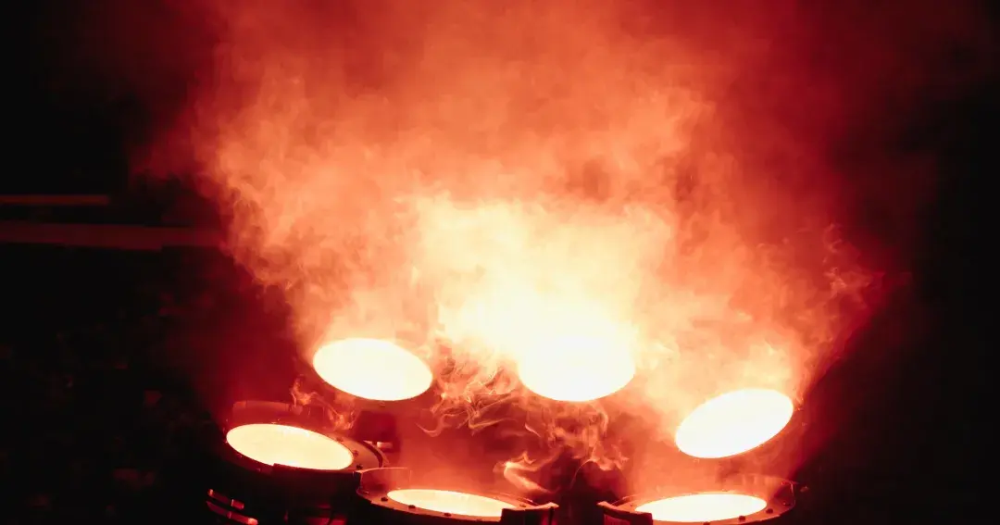
THE SHIFT / FROM SPORTS DAY TO CULTURAL EXPERIENCE
固定流程
标准物料
被动观看
事件叙事
完整品牌系统
共同创作
I DIDN’T JOIN AN EXISTING BRIEF.
I CREATED THE BRIEF.
从提出概念、说服校方，到协调资源与组织团队，这场活动的核心不是执行一项既定任务，而是建立一套此前并不存在的可能性。
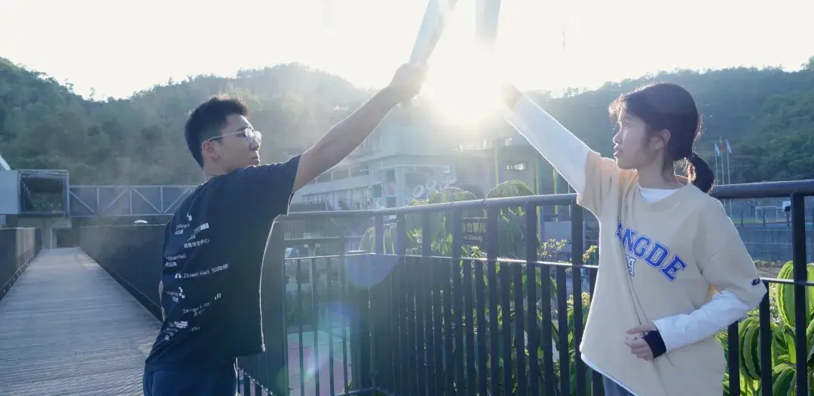
THE TORCH RELAY
火种穿越校园，
将个体连接为集体。
圣火传递被设计为贯穿自然环境、影像与现场空间的叙事线索，最终汇入开幕式点火。
AN 83-MINUTE PROGRAMMED EXPERIENCE
九语欢迎装置与独立活动入口
会徽影片与整体视觉系统
三语主持、旗帜与宣誓
圣火传递与互动点火
和平鸽共创与集体放飞
FROM FLAME TO LIGHT
50 METERS
OF LIGHT.
通过 Arduino 编程，点火动作被转译为一段沿场地展开的50米 LED 光序列。火焰不再只是象征，而成为全场共同经历的视觉事件。
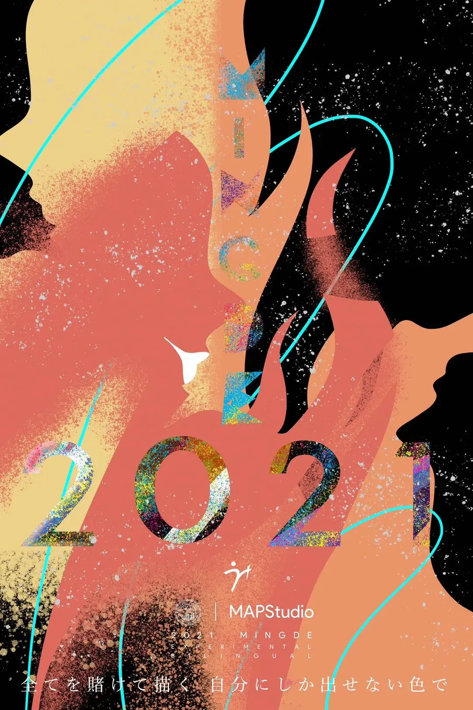
IDENTITY / ONE EVENT, MULTIPLE TOUCHPOINTS
A VISUAL WORLD,
NOT A BACKDROP.
从会徽、字体、色彩到火炬、旗帜、通行证与限量物料，品牌系统覆盖参与者抵达、识别与行动的全过程。
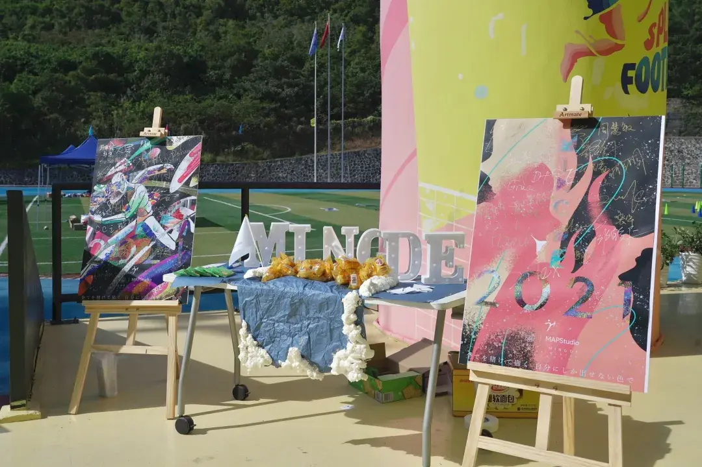
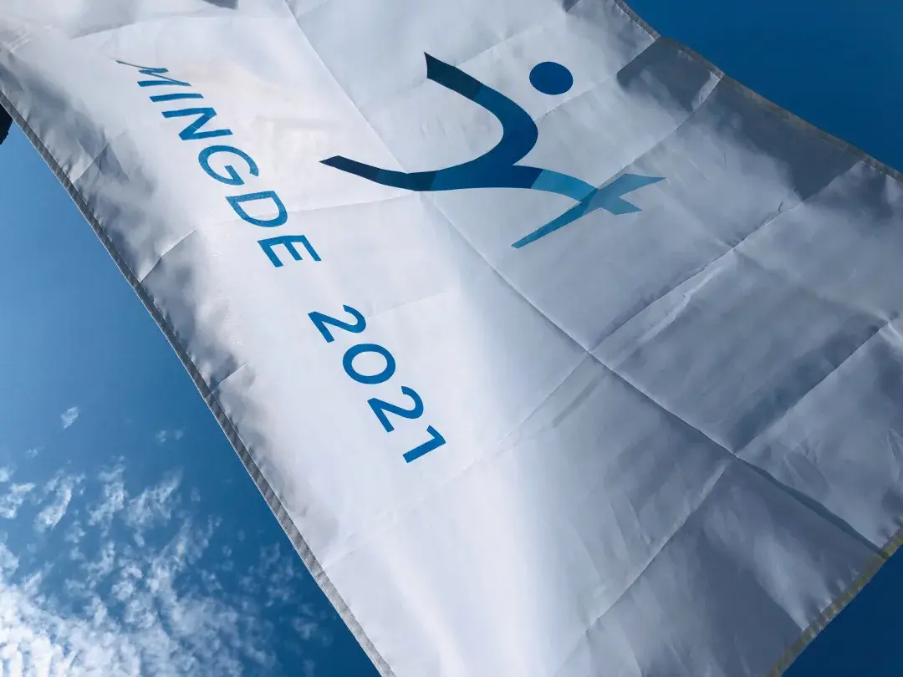
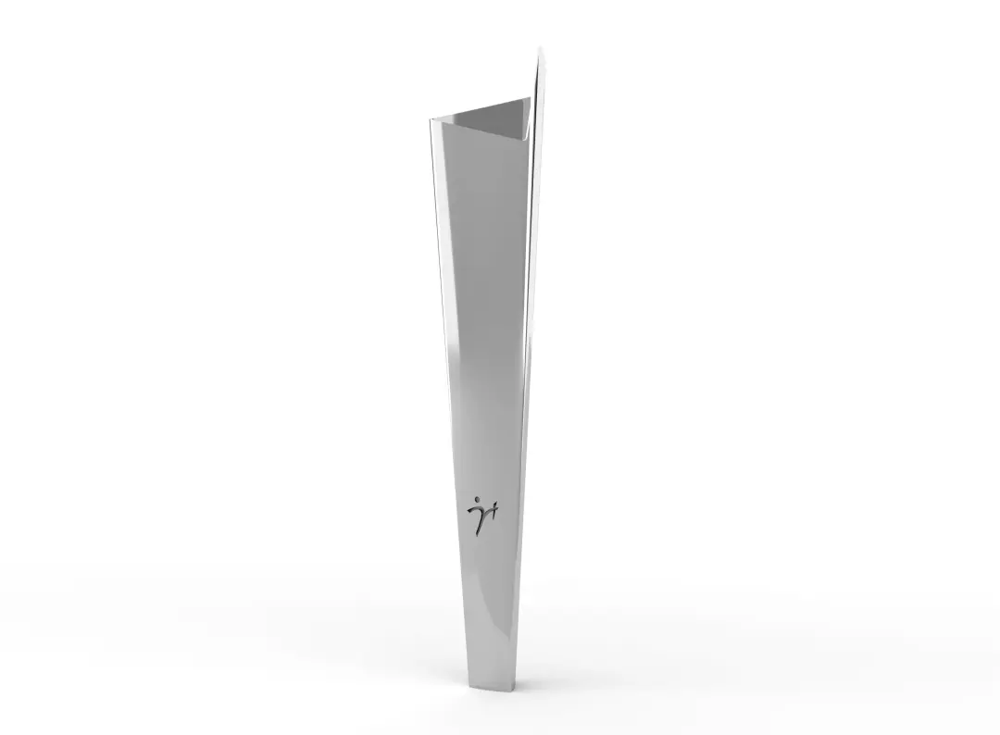
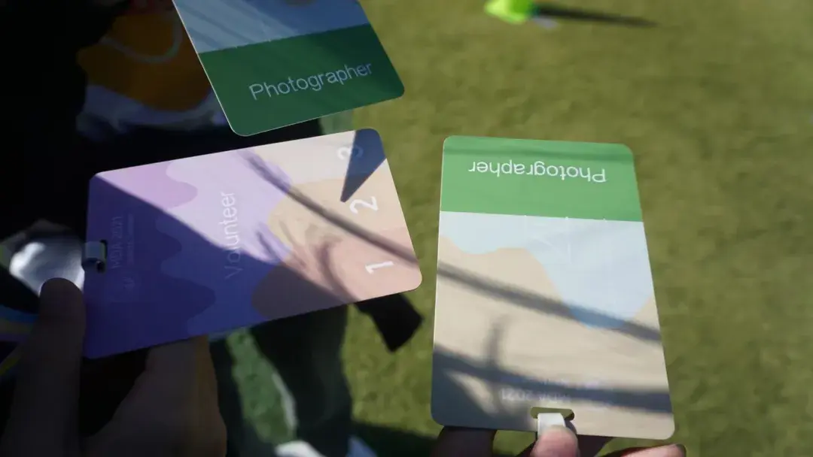
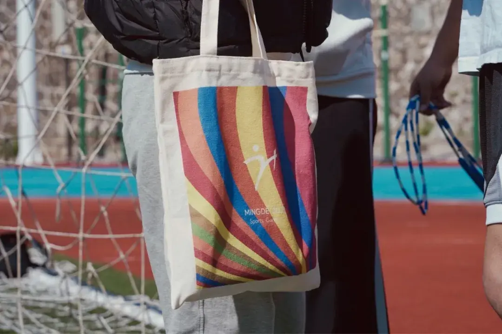
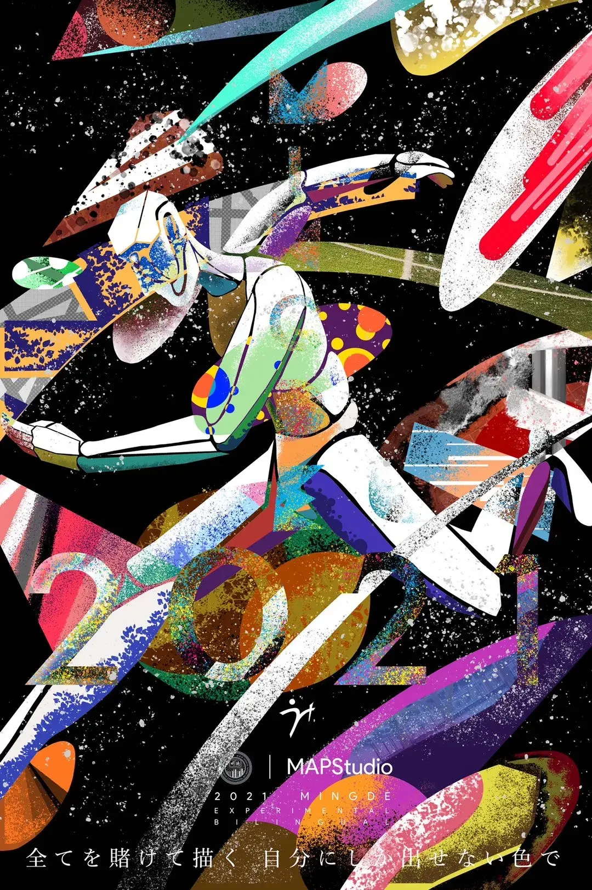
CO-CREATION / AUDIENCE AS AUTHORS
让参与者
完成作品。
学生在和平鸽上留下图像、文字与祝福，再将分散的个人表达汇集为一次共同的空间行动。
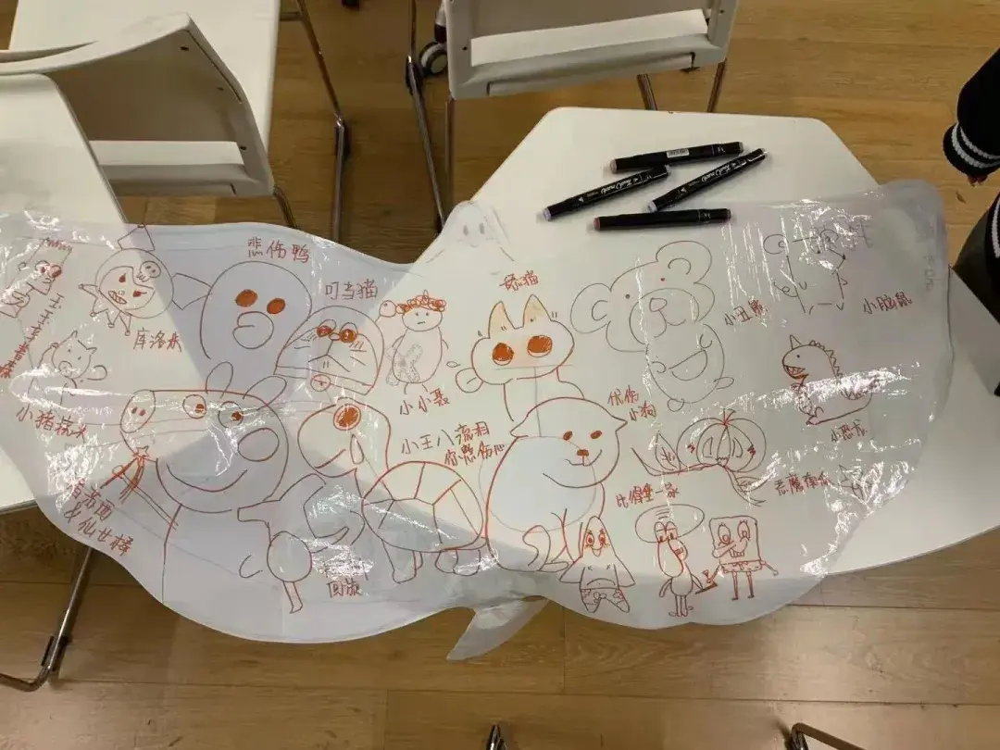
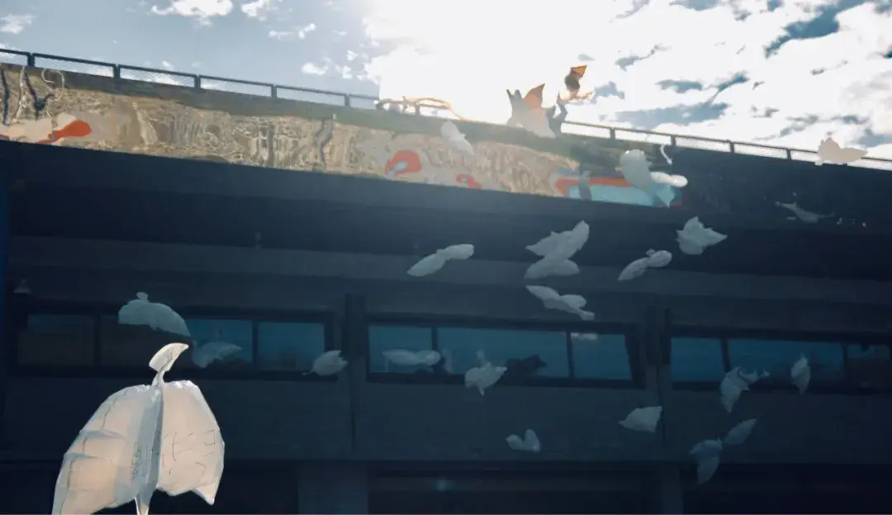
INITIATOR · LEAD PLANNER · CREATIVE DIRECTOR
I CREATED THE BRIEF,
BUILT THE SYSTEM,
AND LED IT INTO REALITY.
项目发起与提案
校方协商与推进
整体活动策略
开幕式叙事
参与机制设计
品牌创意方向
团队组织与统筹
影像与传播统筹
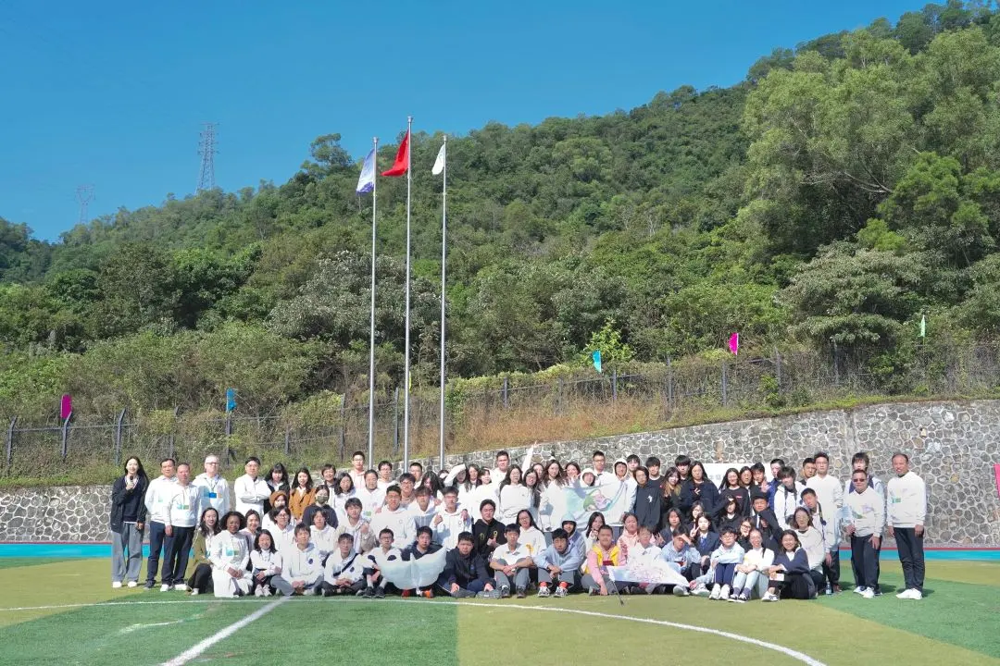
IMPACT